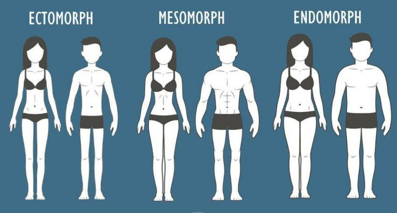

A Gym Instruction é uma plataforma com o principal objetivo de ajudar os novatos que estão iniciando na academia e possui alguma dificuldade em executar certos tipos de exercício.
Cada pessoa tem um biótipo único, que é determinado por sua genética, estilo de vida e outros fatores. No entanto, existem alguns tipos de biótipos comuns que podem ajudar a orientar as escolhas de estilo de vida e exercício físico de uma pessoa. Aqui estão algumas dicas gerais para cada tipo de biótipo:
Pessoas com biótipo ectomorfo geralmente têm corpos magros, com músculos pouco desenvolvidos e dificuldade em ganhar peso. Para essas pessoas, é importante enfatizar exercícios de força para ganhar massa muscular, além de consumir calorias extras para manter o peso. Também é importante evitar atividades físicas que possam queimar muitas calorias e aumentar a perda de peso.
Pessoas com biótipo mesomorfo tendem a ter corpos musculosos, com cinturas estreitas e ombros largos. Para essas pessoas, é importante focar em exercícios de força e resistência para manter e desenvolver a musculatura. É importante manter uma dieta equilibrada e saudável para apoiar o desenvolvimento muscular, e evitar excessos que possam levar a ganho de gordura.
Pessoas com biótipo endomorfo tendem a ter corpos mais arredondados, com acúmulo de gordura em áreas como o abdômen e coxas. Para essas pessoas, é importante enfatizar exercícios aeróbicos para queimar calorias e reduzir a gordura corporal. Também é importante manter uma dieta equilibrada e saudável para evitar o ganho d e peso excessivo, e focar em alimentos ricos em proteínas e fibras para manter a sensação de saciedade